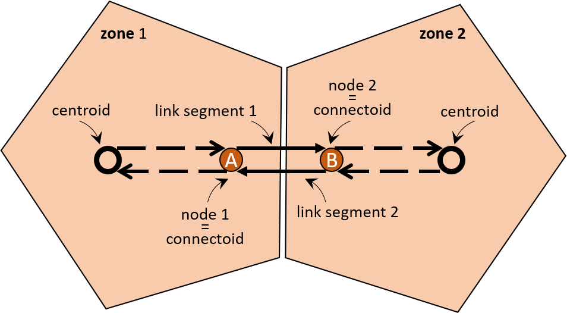

Getting Started
The Python API of PLANit allows you to conduct traffic assignment runs quickly and easily, while still remaining highly configurable. In this getting started we will take you through the process of setting up the environment and constructing your first PLANit assignment run.
Prerequisites
Make sure you installed PLANit-Python, as per the Installation guide
My first Application!
In this section we will be creating our very first PLANit-Python traffic assignment application.
Creating inputs
PLANit requires a network, demands, and zoning structure as inputs to be able to construct a valid transport network. Let’s provide all three in the same XML file. Our XML file is based on the Default PLANit Data Format. Copy the contents of the XML snippet below and save them somewhere on disk, e.g. "c:\Users\Public\planit_test\", as - for example - "planit_input.xml".
<PLANit xmlns:gml="http://www.opengis.net/gml"
xmlns:xsi="http://www.w3.org/2001/XMLSchema-instance">
<!-- Demand component -->
<macroscopicdemand>
<demandconfiguration>
<timeperiods>
<timeperiod id="0">
<duration>3600</duration>
</timeperiod>
</timeperiods>
</demandconfiguration>
<oddemands>
<odcellbycellmatrix timeperiodref="0">
<o ref="1">
<d ref="2">1000</d>
</o>
</odcellbycellmatrix>
</oddemands>
</macroscopicdemand>
<!-- Physical network component -->
<macroscopicnetwork>
<infrastructurelayers>
<layer id="road>
<nodes>
<node id="1" />
<node id="2" />
</nodes>
<links>
<link nodearef="1" nodebref="2">
<linksegment id="1" dir="a_b" />
<linksegment id="2" dir="b_a" />
<length>10</length>
</link>
</links>
</layer>
</infrastructurelayers>
</macroscopicnetwork>
<!-- zoning structure component -->
<macroscopiczoning>
<zones>
<zone id="1">
<centroid>
<name>Zone 1 centroid</name>
</centroid>
<connectoids>
<connectoid noderef="1" />
</connectoids>
</zone>
<zone id="2">
<centroid>
<name>Zone 2 centroid</name>
</centroid>
<connectoids>
<connectoid noderef="2" />
</connectoids>
</zone>
</zones>
</macroscopiczoning>
</PLANit>
Demands
The travel demand is provided in matrix format in veh/h. In this case for the default mode (we did not specify a mode explicitly) and set to a value of 1000:
| Origin/Destination | 1 | 2 |
|---|---|---|
| 1 | - | 1000 |
| 2 | - | - |
Also note that the inputs define a single time period that has a duration of exactly 1 hour, i.e., 3600 seconds.
Network and zoning structure
As you can see, the demands, zoning, and network all have their own section in the XML. Here, the network comprises:
- 1 link (segment)
- 2 nodes (at upstream and downstream of link),
- 2 zones,
- 2 centroids, one per zone,
- two connectoids, one per zone
Each zone represents a geographical area. It has a centroid from which travel demand can depart/arrive. To access the physical road network, each zone has one or more connectoids, i.e., nodes marked as eligible points for ingress/egress. PLANit will construct virtual links, connecting each connectoid node to the centroid. In this case, both nodes are marked as connectoids for one of the two zones.

PLANit model configuration
Let us now configure our traffic assignment run using the above inputs.
- Open a text editor to create our Python script.
It is advised to use an editor that supports syntax highlighting for Python. Possibly even an IDE so you can debug your code, e.g. Eclipse with PyDev for example.
- create a new Python script - for example -
my_first_planit.py - save it in the same directory as where you created the XML input file
The *.py extension signals that this is a python script that can be interpreted and run by Python.
- Copy the below script into the file and save it. We’ll go through the script line by line to explain what is going on
from planit import *
plan_it = PLANit()
# COMPONENTS
plan_it.set(TrafficAssignment.TRADITIONAL_STATIC)
plan_it.assignment.set(PhysicalCost.BPR)
plan_it.assignment.set(VirtualCost.FIXED)
plan_it.assignment.set(Smoothing.MSA)
# CONFIGURE COST COMPONENT
# BPR Travel time function
alpha = 0.9
beta = 4.5
plan_it.assignment.physical_cost.set_default_parameters(alpha,beta)
# CONFIGURE OUTPUT
plan_it.assignment.output_configuration.set_persist_only_final_Iteration(True)
# RUN ASSIGNMENT
plan_it.run()
First, an instance of a PLANit project is created, named plan_it, via
from planit import *
plan_it = PLANit()
The PLANit() implementation is available as part of the planit module. Since we might need more than just the PLANit() class we import the entire API functionality first via from planit import * before we instantiate it. Leaving out the import will cause the script to fail since it won;t be able to find the necessary PLANit code.
You can give the instance any name you want, it is not tied to plan_it, it could also be
i_love_assignment, orp, orwhat_now. Do note that a descriptive name is usually the best choice.
This instance allows you to configure the assignment. To do so, you must first decide on what traffic assignment components you want to use. The most important and first component that must be chosen is the type of traffic assignment. Here, we adopt the traditional static traffic assignment model. It is configured by setting it on the planit instance, via its set method:
plan_it.set(TrafficAssignment.TRADITIONAL_STATIC)
Like all components that the user can choose, you provide its enum identifier to PLANit to let PLANit initialise the underlying object(s). For traffic assignment options, this is the TrafficAssignment.<enum>.
Each traffic assignment comes with a number of default components that will be activated automatically. For the sake of this example, we explicitly activate the defaults (BPR, FIXED, MSA) in the script via:
plan_it.assignment.set(PhysicalCost.BPR)
plan_it.assignment.set(VirtualCost.FIXED)
plan_it.assignment.set(Smoothing.MSA)
Once you have completed this example, you can try running it again, but now with the above three lines removed. You will see they yield the same result, i.e., these components are activated by default.
As you can see, each line calls the .set() method on plan_it.assignment. Because we chose our assignment to be the traditional static assignment, plan_it exposes the configuration for this assignment via its .assignment property.
Physical cost
Here, we choose to set the physical cost, which represents the cost structure imposed on the physical road network, to BPR. This is the most common travel time function used for this type of assignment method.
Virtual cost
In PLANit, you can configure the costs for the virtual part of the network that connects the travel demand from the zones to the physical network (via virtual links between connectoids and centroids) separately. Here, we choose that cost to be FIXED, using its default value.
Smoothing
Traditional static assignment is a so-called within-day equilibrium method based on Wardrop’s first principle, meaning that it seeks to finds a solution where all travellers find their optimal path having the smallest cost given the choices of all other travellers (who do the same). This requires an iterative procedure. During this iteration process, so called smoothing is applied. This ensures that changes between iterations result in a smooth transition towards the equilibrium solution. there exist many ways to apply smoothing. Here, MSA smoothing is used because of its simplicity and computational attractiveness.
Different assignment types have different components for cost, smoothing, etc. that they support. Make sure that the choice for each component is compatible with your assignment method.
Let us now look at how to configure options on one of our components; the BPR cost function:
alpha = 0.9
beta = 4.5
plan_it.assignment.physical_cost.set_default_parameters(alpha,beta)
Because we chose BPR, the BPR configuration is made availabe via plan_it.assignment.physical_cost.
The same holds for the other components, each one is available via a property on
plan_it.assignment.
The BPR function has two parameters (alpha and beta) that you can configure in various ways, see BPR documentation. Here, we will just change the defaults for all link segments, modes, and link segment types simultaneously. We do so via .set_default_parameters().
Before we start the simulation run, we also explicitly make sure that we only store results of the final iteration. Why? Well, because a simulation might need hundreds of iterations to solve. Then, you’re likely are only interested in the final result and do not want PLANit to waste precious time and space on generating outputs for intermediate iterations.
In this example, this is not the case, but for demonstration purposes it is useful to demonstrate this useful feature.
To make this happen we call
plan_it.assignment.output_configuration.set_persist_only_final_Iteration(True)
Everything related to general choices regarding outputs is configured via
.output_configuration. Dedicated configuration for link, od, and path outputs also exist (when activated). They are accessible viaplan_it.assignment.link_configuration.<call>,plan_it.assignment.od_configuration.<call>, andplan_it.assignment.path_configuration.<call>
Running the script
Before running the script make sure it ends with the line:
plan_it.run()
This will trigger the simulation to start. Make sure all configuration is conducted before calling this method, because otherwise it has no impact on the simulation.
- Open a new console window
- Go to the directory where you saved the input and your python script
- Execute the following command:
python my_first_planit.py
Replace
my_first_planit.pywith your own script name if you chose a different name.
If all went well the script should run. On the console you will see some information regarding the run, the located inputs and the generated outputs. Since we did not change the default settings for the output; all outputs are persisted in the same location as where we found the inputs.
- Go to the directory where your scripts is located
You should see that PLANit generated two files, an XML file, and a CSV file. The former contains meta-data about the latter. The CSV file contains the actual results of your run.
Result files
The Default Output Formatter generates meta-data for each run as well as CSV files that contain the actual data. Let’s take a quick look.
XML meta-data
The XML meta-data file you generally only use when you’re still unfamiliar with the column information in the CSV, or to get some information about the run when you forgot how it was generated, otherwise you are likely to skip it and only concern yourself with the CSV results
Your XML meta-data file contains information about the simulation run, but most importantly provides information on the column information in the CSV. Each column is listed with information on:
- name, related to the column heading in the CSV
- type, type of the values, e.g., integer, string, double, etc.
- unit, unit of the values, e.g., km, h, m, veh/h, etc.
Below you’ll find the XML meta-data for this run (you should have something very similar)
<?xml version="1.0" encoding="UTF-8" standalone="yes"?>
<metadata xmlns:xsi="http://www.w3.org/2001/XMLSchema-instance" xsi:noNamespaceSchemaLocation="<path_to_xsd>/metadata.xsd">
<timestamp>2020-06-01T15:29:18.480+10:00</timestamp>
<version>X.Y.Z</version>
<description>A_DESCRIPTION</description>
<outputconfiguration>
<assignment>TraditionalStaticAssignment</assignment>
<physicalcost>BPRLinkTravelTimeCost</physicalcost>
<virtualcost>FixedConnectoidTravelTimeCost</virtualcost>
<smoothing>MSASmoothing</smoothing>
<gapfunction>LinkBasedRelativeDualityGapFunction</gapfunction>
<stopcriterion>StopCriterion</stopcriterion>
<timeperiod>
<id>0</id>
<name></name>
</timeperiod>
</outputconfiguration>
<simulation>
<iteration>
<nr>2</nr>
<csvdata type="Link">LINK_TO_CSV_RESULT_FILE</csvdata>
</iteration>
</simulation>
<columns>
<column>
<name>Downstream Node XML Id</name>
<units>none</units>
<type>string</type>
</column>
<column>
<name>Link Segment XML Id</name>
<units>none</units>
<type>string</type>
</column>
<column>
<name>Mode XML Id</name>
<units>none</units>
<type>string</type>
</column>
<column>
<name>Time Period XML Id</name>
<units>none</units>
<type>string</type>
</column>
<column>
<name>Time Period Id</name>
<units>none</units>
<type>integer</type>
</column>
<column>
<name>Upstream Node XML Id</name>
<units>none</units>
<type>string</type>
</column>
<column>
<name>Capacity per Lane</name>
<units>veh/h</units>
<type>double</type>
</column>
<column>
<name>Downstream Node Location</name>
<units>srs</units>
<type>srsname</type>
</column>
<column>
<name>Length</name>
<units>km</units>
<type>double</type>
</column>
<column>
<name>Maximum Speed</name>
<units>km/h</units>
<type>double</type>
</column>
<column>
<name>Number of Lanes</name>
<units>none</units>
<type>integer</type>
</column>
<column>
<name>Upstream Node Location</name>
<units>srs</units>
<type>srsname</type>
</column>
<column>
<name>Calculated Speed</name>
<units>km/h</units>
<type>double</type>
</column>
<column>
<name>Cost</name>
<units>h</units>
<type>double</type>
</column>
<column>
<name>Density</name>
<units>veh/km</units>
<type>double</type>
</column>
<column>
<name>Flow</name>
<units>veh/h</units>
<type>double</type>
</column>
</columns>
</metadata>
CSV Results
The CSV result file - with default settings - has a heading row with the column names (corresponding to the columns in the XML meta-data file). The other rows contain the result values, separated by a comma. In this very simple example we only have a single result row for the one link. The result should look something like the following:
Downstream Node XML Id,Link Segment XML Id,Mode XML Id,Time Period XML Id,Time Period Id,Upstream Node XML Id,Capacity per Lane,Downstream Node Location,Length,Maximum Speed,Number of Lanes,Upstream Node Location,Calculated Speed,Cost,Flow
2,1,1,0,0,1,1800.0000000,Not Specified,10.0000000,80.0000000,1,Not Specified,75.1948772,0.1329878,180.0000000,1000.0000000
As you can see, we find that the the flow is indeed 1000 veh/h as stated in our input. The speed is somewhat reduced compared to free flow resulting in a slightly increased travel time (cost)
Many of columns you are likely not interested in for most applications. You can add and remove columns very easily. More information on this can be found under the Link Configuration section of the manual.
Activating more output types
By default, only link results are generated. There are however other types of output that you can activate via the chosen traffic assignment instance, such as:
- Path results, configurable via the Path Output Configuration
- OD results, configurable via the OD Output Configuration
- …
To do so, include the following lines in your script:
plan_it.assignment.activate_output(OutputType.PATH)
plan_it.assignment.activate_output(OutputType.OD)
If you run your script again, you will see that four additional files are created, two new XML files (one for paths, one for ODs) and two new CSV files (one for paths and one for ODs).
This concludes your first PLANit application. We hope you enjoyed it!